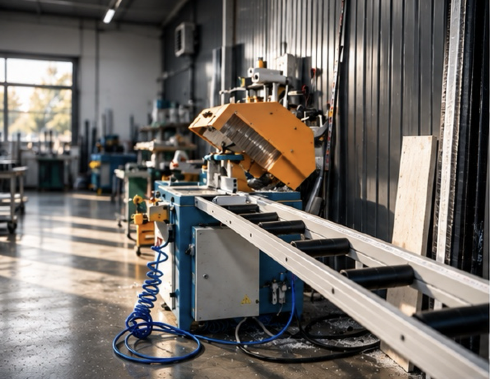

О компании
Стекло как часть архитектуры
Делаем раздвижные и складные алюминиевые двери для загородных домов в Москве и области — от замера до сданного проёма.
- 5+ летпроектируем и монтируем панорамное остекление
- 200+объектов в Москве и Московской области
- 30–60 днейизготовление после подтверждения заказа
- 5 летгарантия на монтаж
Почему мы
Отвечаем за проём целиком
Большая стеклянная дверь — это не только профиль и стекло. Это порог, пол, гидроизоляция и вес створки, которую вы каждый день открываете одной рукой.
- 01
Сначала замер
Смотрим геометрию проёма, уровень чистового пола и основание. Систему подбираем после, а не до.
- 02
Своё производство
Собираем двери в ТиНАО и до отгрузки проверяем геометрию и механизмы. На объект приезжает отлаженная конструкция.
- 03
Один подрядчик
Замер, изготовление, доставка, монтаж и регулировка — одна команда и одна ответственность.
- 04
Проверенная база
Профиль ALUMARK и фурнитура Roto Patio: Lift для раздвижных дверей, Fold — для складных.
- 05
Цена видна сразу
В каталоге и калькуляторе — без звонков и регистрации. Итоговую сумму фиксируем в договоре.
- 06
Сдаём в работе
Регулируем механизмы при вас и показываем, как ухаживать за дверью. Гарантия на монтаж — 5 лет.

Производство
Своё производство в ТиНАО
- Адрес
- Москва, ТиНАО, Краснопахорский район, квартал № 205, 1, стр. 1
- Часы
- Ежедневно, 10:00–20:00
- Что делаем
- Сборка, проверка геометрии и обкатка механизмов перед отгрузкой
- Самовывоз
- Готовый заказ можно забрать самим — время согласуем заранее
Как мы работаем
От проёма до готовой двери
- 01Замер
Приезжаем в удобный день, проверяем проём, пол и основание.
Бесплатно - 02Проект и договор
Подбираем систему и раскладку створок, фиксируем цену и срок.
Цена в договоре - 03Производство
Собираем дверь и проверяем механизмы до отгрузки.
30–60 дней - 04Монтаж
Устанавливаем, герметизируем, регулируем и сдаём в работе.
Гарантия 5 лет
Реквизиты
Юридическая информация
- Полное наименование
- [ЗАПОЛНИТЬ]
- ИНН / КПП
- [ЗАПОЛНИТЬ]
- ОГРН / ОГРНИП
- [ЗАПОЛНИТЬ]
- Юридический адрес
- [ЗАПОЛНИТЬ]
- Банк, БИК
- [ЗАПОЛНИТЬ]
- Расчётный счёт
- [ЗАПОЛНИТЬ]
- Адрес производства
- Москва, Троицкий административный округ, Краснопахорский район, квартал № 205, 1, стр. 1
- Телефон, e-mail
- +7 977 410-24-79 · info@steclodom.ru